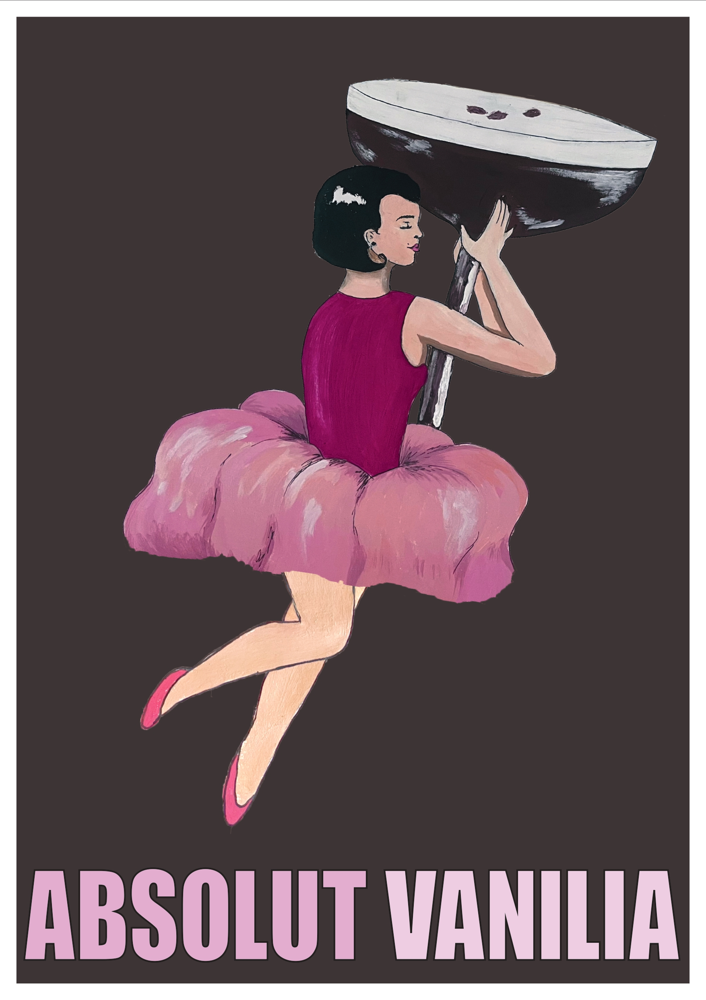
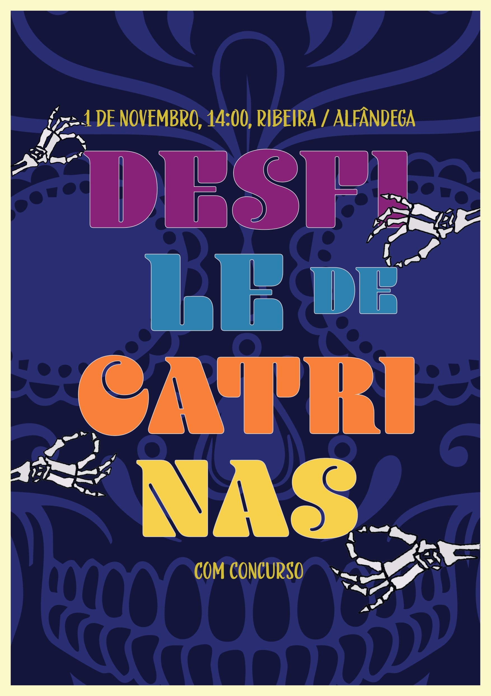
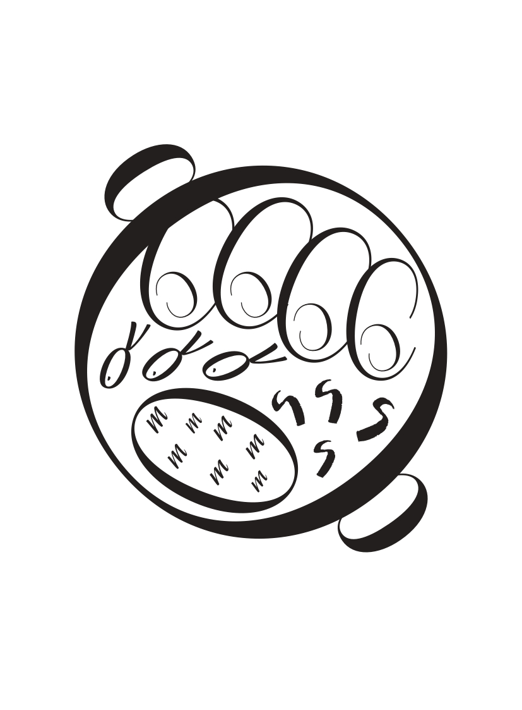
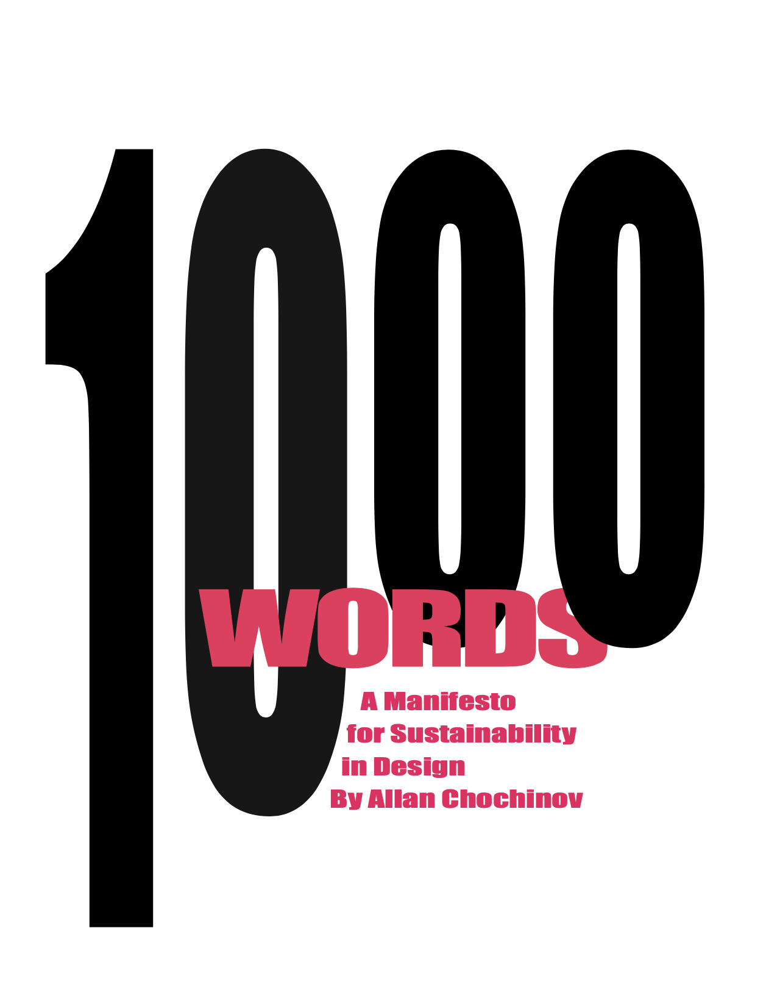

Processos

01.
Para este trabalho, foi proposto escolher um artista e, de acordo com todos os cartazes que esse artista tinha, tínhamos de criar um cartaz cuja estrutura fosse semelhante à dos seus trabalhos. O artista que escolhi fazia muitos trabalhos para marcas de álcool, então escolhi a bebida Absolut Vanilia para fazer a propaganda. Estruturei o cartaz de acordo com alguns trabalhos do artista, utilizando uma moldura branca à volta, uma imagem no centro e o título por baixo. A imagem foi desenhada à mão e digitalizada para o computador. No final, apenas uni todos os elementos e estruturei o cartaz desta forma:

02.
A proposta deste trabalho foi encontrar letras em cenas do quotidiano e criar um alfabeto. Depois de encontrar todas as letras, tive de exportar todas as fotografias para o Photoshop e vetorizar cada letra a cores. Depois de tudo vetorizado, uni todas as letras num único documento.

03.
A proposta deste trabalho era realizar um livro com um texto fornecido pelo professor. Neste trabalho, era muito importante pôr em prática técnicas no InDesign, organizar manchas de texto e hierarquizar a capa e a contracapa. Aqui apresento apenas a capa, porque o miolo era composto apenas por texto corrido e achei a capa mais interessante de apresentar. Decidi dispor o título desta forma, visto que o texto falava de uma época de modernização. Assim, procurei também criar um contraste com o fundo e estabelecer uma relação com o interior do livro.

04.
Para este trabalho, cada aluno escolheu um tipo de evento e, posteriormente, foi votado um evento para desenvolver um cartaz. O evento escolhido foi um desfile de catrinas, mas o professor disse que não queria nada muito genérico ou semelhante aos restantes trabalhos, ou seja, nada de caveiras, chapéus e elementos semelhantes. Por isso, decidi centrar-me mais na tipografia e na paleta de cores, colocando apenas um padrão de caveiras no fundo para realçar a composição.

05.
Aqui foi realizado um trabalho de experimentação no início do primeiro ano da faculdade, no qual o objetivo era começarmos a utilizar os programas Photoshop e Illustrator. Tínhamos de escolher uma palavra relacionada com um trabalho anterior e desenvolver uma composição visual a partir dessa palavra. Neste trabalho, utilizei sobretudo texturas, pois era a minha primeira vez a trabalhar com estes programas e ainda não sabia muito bem quais as ferramentas ou técnicas a utilizar. Assim, procurei explorar o programa ao máximo, experimentando diferentes efeitos, composições e possibilidades gráficas. Foi um trabalho de que gostei muito, principalmente porque me permitiu descobrir novas formas de criar e perceber melhor as potencialidades dos programas de design.

06.
Este trabalho foi, provavelmente, um dos meus favoritos. A proposta consistia em pegar numa receita e criar uma imagem utilizando apenas letras. Não podíamos esticá-las nem deformá-las, e a imagem final tinha de ficar minimamente parecida com o prato escolhido. A escolha do prato tinha de estar relacionada com a nossa cidade, por isso escolhi “Petingas à Moda das Caxinas”, um prato muito tradicional de Vila do Conde. Neste trabalho, procurei explorar a tipografia de forma criativa, utilizando diferentes tamanhos, orientações e composições das letras para construir a imagem do prato. Gostei especialmente deste projeto porque combinava criatividade, identidade cultural e experimentação tipográfica, permitindo transformar texto em imagem de uma forma original e desafiante.

07.
Aqui foi realizada a criação de outro livro, sendo este o primeiro trabalho de design editorial. Tratava-se apenas de um booklet, desenvolvido como introdução à disciplina. Decidi criar a capa desta forma porque queria uma composição equilibrada, mas que também fosse visualmente interessante e esteticamente apelativa. Como o livro era sobre um manifesto, procurei transmitir essa ideia através da organização dos elementos gráficos, da tipografia e da composição da capa. Foi um trabalho importante para começar a compreender melhor os princípios do design editorial, como a hierarquia visual, o equilíbrio da página e a relação entre texto e imagem.